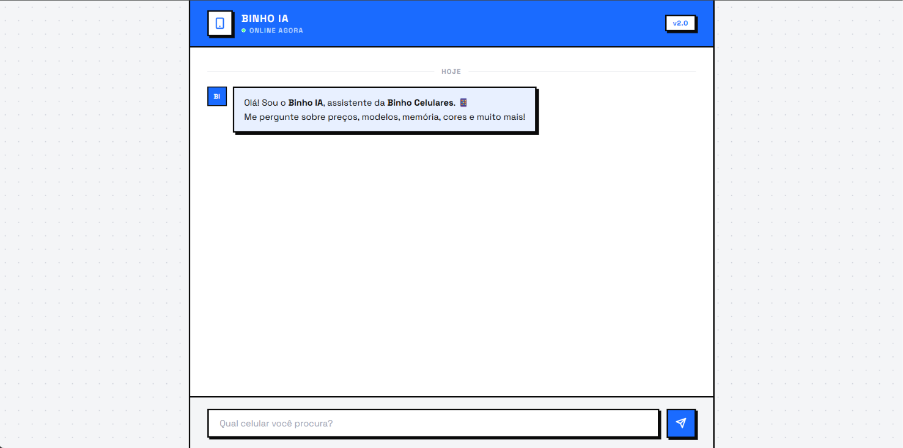
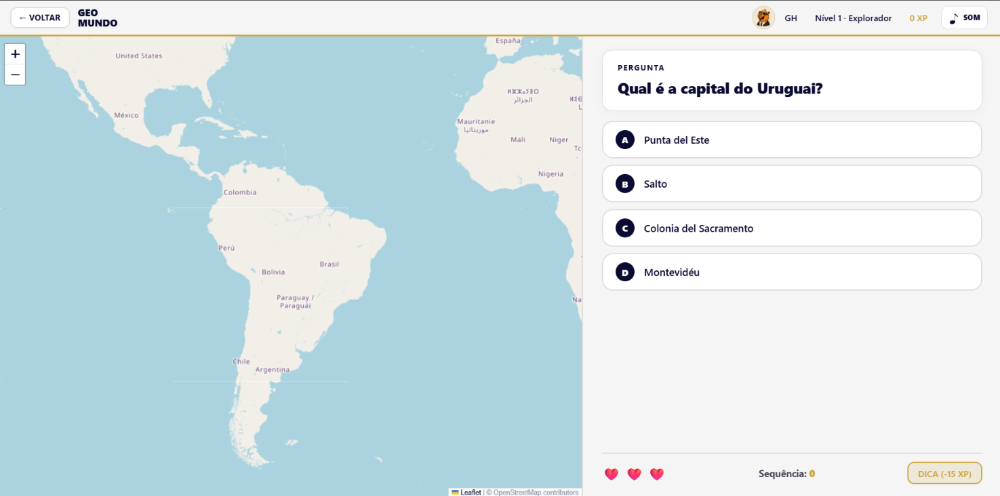

01 / 05
01 EDUCAÇÃO / PORTAL
Portal Acácio Piedade
Um portal de atividades voltado à aprendizagem de crianças em fase de desenvolvimento, com foco no reconhecimento dos números e na formação de palavras.
Ver projetoUma presença digital com a sua identidade.
Sou Joaquim Neto, estudante de Análise e Desenvolvimento de Sistemas. Desenvolvo sites com foco em clareza, personalidade e facilidade de uso.
CÓDIGO, TRAJETÓRIA & CONTATO
VAMOS COMEÇAR
Escreva sua mensagem e envie direto pelo WhatsApp.
TRABALHOS SELECIONADOS / 01—03
Ideias colocadas em prática: interfaces, experiências educativas e soluções digitais.
01 EDUCAÇÃO / PORTAL
Um portal de atividades voltado à aprendizagem de crianças em fase de desenvolvimento, com foco no reconhecimento dos números e na formação de palavras.
Ver projeto
02 CONCEITO / CHATBOT
Protótipo de assistente para explorar uma experiência de atendimento digital em uma loja de celulares.
Projeto hipotético e independente. Não é um canal oficial da Binho Celulares.
Explorar protótipo
03 JOGO / GEOGRAFIA
Jogo desenvolvido para o TCC que estimula o conhecimento de geografia por meio de locais, vegetação, clima e fusos horários.
Jogar Geo MundoTem uma ideia para tirar do papel?
Vamos conversar